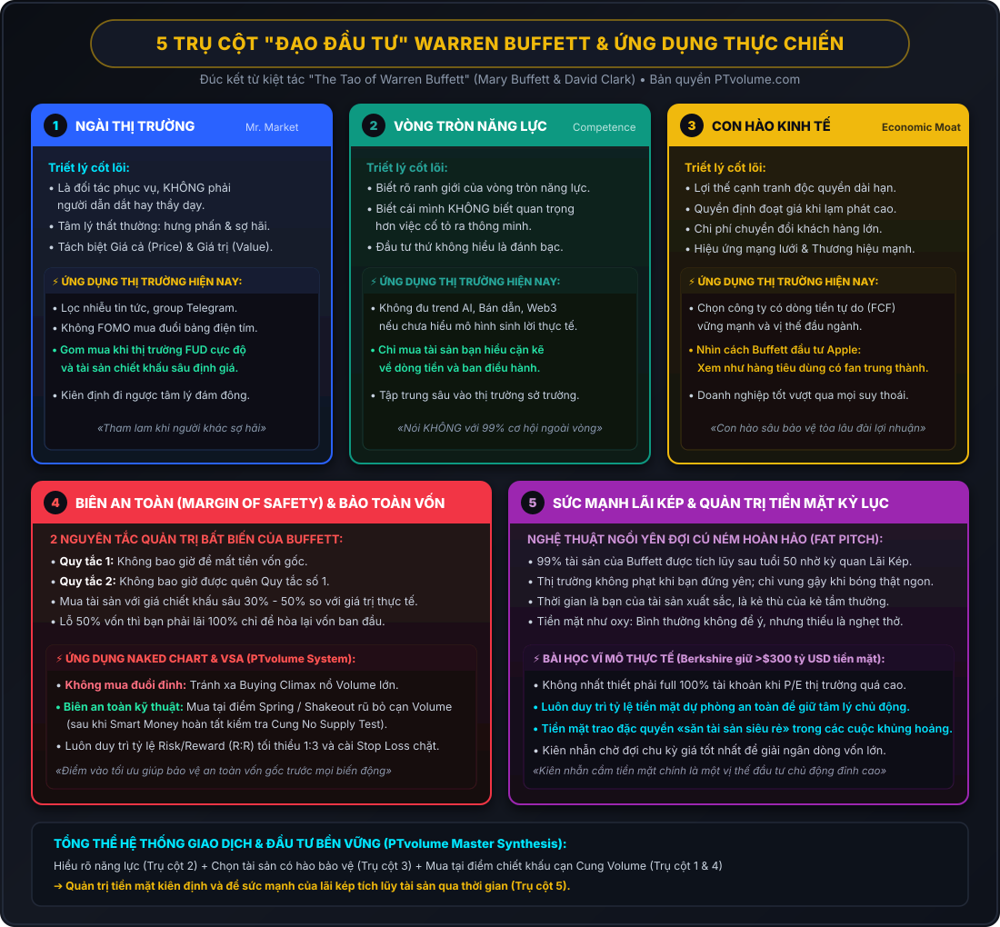
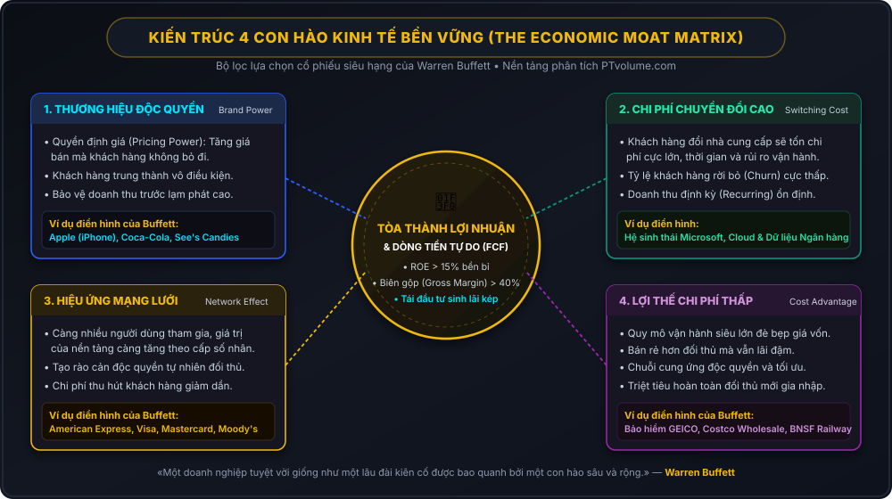
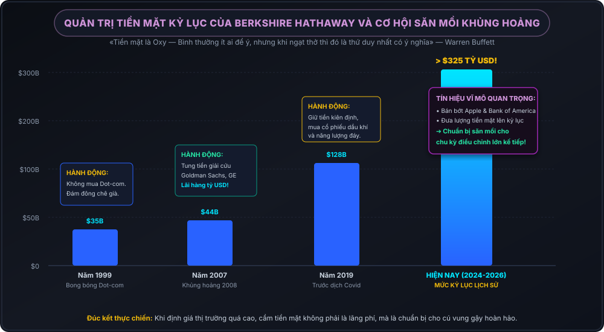
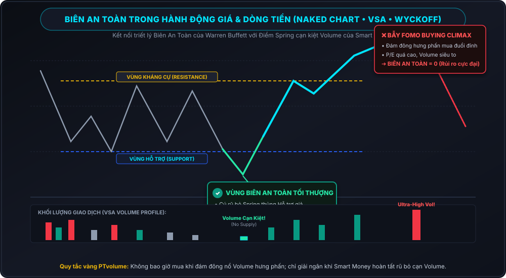

"Hãy sợ hãi khi người khác tham lam, và hãy tham lam khi người khác sợ hãi."
— Warren Buffett
Trong thế giới tài chính nơi các xu hướng, thuật toán AI và làn sóng giao dịch cao tần (HFT) thay đổi theo từng giây, cái tên Warren Buffett vẫn sừng sững như một ngọn hải đăng bất biến. Cuốn sách «Đạo của Warren Buffett» (The Tao of Warren Buffett) do Mary Buffett (con dâu cũ của ông) và David Clark biên soạn không trình bày các công thức toán học khô khan, mà tập hợp những châm ngôn, câu châm ngôn và nguyên tắc tư duy sinh tồn đã giúp Buffett xây dựng nên đế chế Berkshire Hathaway hùng mạnh từ hai bàn tay trắng.
Đây không chỉ là cuốn cẩm nang dành riêng cho các nhà đầu tư nắm giữ cổ phiếu dài hạn, mà là một bức tranh tư duy phản chiếu bản chất tâm lý thị trường, quy luật dòng tiền và nghệ thuật kiên định mà bất kỳ ai – từ nhà đầu tư giá trị cho đến một trader theo trường phái Price Action, Naked Chart hay VSA (Volume Spread Analysis) – đều buộc phải khắc cốt ghi tâm nếu muốn tồn tại bền vững.

I. 5 TRỤ CỘT TRIẾT LÝ CỐT LÕI ("ĐẠO" CỦA BUFFETT)
1. «Ngài Thị Trường» (Mr. Market) & Sự Tách Biệt Giữa Giá Cả Với Giá Trị
Triết lý nền tảng nhất mà Buffett kế thừa từ người thầy vĩ đại Benjamin Graham là khái niệm Ngài Thị Trường (Mr. Market). Graham và Buffett ví thị trường chứng khoán như một người bạn cùng làm ăn mắc chứng rối loạn lưỡng cực:
- Những ngày hưng phấn (Greed): Hắn thức dậy với sự lạc quan mù quáng, định giá doanh nghiệp trên mây và muốn mua cổ phần của bạn với mức giá ngất ngưởng.
- Những ngày trầm cảm (Panic/Fear): Hắn nhìn thấy viễn cảnh tận thế ở khắp mọi nơi và sẵn sàng bán tống bán tháo cổ phần chất lượng cao với giá rẻ như cho không.
Đạo lý của Buffett: «Ngài Thị Trường ở đó để phục vụ bạn, chứ không phải để hướng dẫn bạn.» Sai lầm chết người của 95% đám đông là coi biến động giá xanh đỏ trên bảng điện tử là thước đo sức khỏe của một doanh nghiệp. Hãy học cách tách biệt hoàn toàn giữa Giá cả (Price - cái bạn trả) và Giá trị (Value - cái bạn nhận được).
2. Vòng Tròn Năng Lực (Circle of Competence)
Buffett luôn nhấn mạnh rằng: «Biết những gì bạn không biết quan trọng hơn rất nhiều so với việc tỏ ra thông minh.»
Vòng tròn năng lực của bạn không cần phải bao trùm toàn bộ nền kinh tế thế giới. Bạn không cần phải hiểu về công nghệ bán dẫn 2nm, giao thức Web3, công nghệ sinh học đột biến gen lẫn chuỗi cung ứng xe điện cùng một lúc. Điều duy nhất bạn cần là vẽ thật chính xác đường biên giới của vòng tròn năng lực của mình, và tuyệt đối không bao giờ cho phép bản thân giải ngân ra ngoài ranh giới đó chỉ vì hiệu ứng sợ bỏ lỡ cơ hội (FOMO).
3. Con Hào Kinh Tế (Economic Moat)
Trong thế giới kinh doanh tàn khốc của chủ nghĩa tư bản, bất kỳ doanh nghiệp nào kiếm được lợi nhuận biên cao đều sẽ bị các đối thủ nhảy vào tấn công dữ dội. Để tồn tại và phát triển qua hàng thập kỷ, doanh nghiệp đó phải sở hữu một «Con hào kinh tế» (Economic Moat) vững chắc bảo vệ tòa lâu đài lợi nhuận:
- Sức mạnh thương hiệu độc quyền (Consumer Monopoly): Khách hàng sẵn sàng trả mức giá cao hơn mà không tìm phương án thay thế (Coca-Cola, Apple, See's Candies).
- Chi phí chuyển đổi (Switching Costs): Việc rời bỏ nhà cung cấp dịch vụ gây ra chi phí rủi ro và tổn thất quá lớn (hệ thống dữ liệu đám mây ngân hàng, phần mềm quản trị doanh nghiệp).
- Hiệu ứng mạng lưới (Network Effect): Giá trị của dịch vụ tăng theo cấp số nhân khi số lượng người sử dụng tăng lên (Visa, Mastercard, American Express).
- Lợi thế quy mô chi phí thấp bền vững (Low-Cost Producer): Sở hữu cơ cấu chi phí tối ưu mà không đối thủ nào cạnh tranh nổi.

4. Biên An Toàn (Margin of Safety) & Hai Quy Tắc Bất Di Bất Dịch
Biên an toàn là chiếc đệm giảm xóc cứu mạng mọi nhà đầu tư. Khi bạn định giá một doanh nghiệp đáng giá 100 USD, đừng bao giờ mua ở mức 95 USD. Hãy kiên nhẫn chờ đợi Ngài Thị Trường lên cơn hoảng loạn và bán nó ở mức 60 USD hoặc 50 USD. Khoảng cách 40-50 USD đó chính là biên an toàn.
2 NGUYÊN TẮC QUẢN TRỊ TỐI THƯỢNG CỦA BUFFETT
- Quy tắc số 1: Không bao giờ để mất tiền vốn gốc.
- Quy tắc số 2: Không bao giờ được quên Quy tắc số 1.
Lý do đằng sau quy tắc này là toán học giảm giá: Nếu bạn để tài khoản sụt giảm 50%, bạn cần phải tạo ra mức lợi nhuận 100% chỉ để hòa vốn ban đầu. Tránh xa các đòn bẩy quá mức và không bao giờ đánh cược số vốn cốt lõi vào những canh bạc bất định.
5. Sức Mạnh Lãi Kép & Nghệ Thuật Ngồi Yên Chờ Đợi Cú Ném Hoàn Hảo
Buffett thừa nhận rằng 99% tài sản ròng của ông được tạo ra sau sinh nhật lần thứ 50. Bí mật nằm ở sức mạnh kỳ diệu của lãi kép theo thời gian dài. Đầu tư thành công không phải là việc tung hứng hàng chục lệnh giao dịch mỗi ngày.
"Thị trường chứng khoán là một trò chơi không có luật strike-out (đánh trượt 3 quả bóng là bị loại). Bạn không bắt buộc phải vung gậy với mọi quả bóng mà pitcher ném tới. Bạn có thể kiên nhẫn đứng đợi hàng giờ, hàng tuần cho đến khi quả bóng bay đúng vào điểm ngọt (fat pitch) của bạn."
— Warren Buffett
| Khía Cạnh So Sánh | Tư Duy Đám Đông Thất Bại | «Đạo» Của Warren Buffett |
|---|---|---|
| Bản chất cổ phiếu | Tờ vé số, mã nến để mua rẻ bán đắt theo ngày. | Giấy chứng nhận quyền sở hữu một phần cỗ máy kinh doanh thực tế. |
| Tần suất hành động | Giao dịch liên tục vì cảm giác sợ bỏ lỡ (FOMO). | Kiên nhẫn ngồi đọc báo cáo, chờ đợi cơ hội định giá chiết khấu sâu. |
| Định nghĩa Rủi ro | Sự rung lắc, biến động giá nến ngắn hạn (Volatility). | Sự sụt giảm vốn vĩnh viễn do thiếu hiểu biết và mua sai giá trị. |
| Vai trò tiền mặt | Cho rằng giữ tiền mặt là lãng phí chi phí cơ hội. | Tiền mặt là oxy – khi khủng hoảng xảy ra, người có tiền mặt là vua. |
| Thời gian nắm giữ | Vài ngày đến vài tuần; chốt lời non, gồng lỗ sâu. | Thời gian nắm giữ lý tưởng cho doanh nghiệp tuyệt vời là: «Mãi mãi». |
II. ỨNG DỤNG VÀO THỰC TẾ THỊ TRƯỜNG TÀI CHÍNH HIỆN NAY
Bước sang thời kỳ kinh tế vĩ mô đầy biến động – lạm phát dai dẳng, chu kỳ thắt chặt tiền tệ, bùng nổ trí tuệ nhân tạo (AI), sự trỗi dậy của thị trường tiền mã hóa (Crypto) và các mạng xã hội tài chính bùng nổ – làm thế nào để áp dụng «Đạo của Buffett» một cách linh hoạt và sắc bén?
1. Đãi Cát Tìm Vàng Trong Làn Sóng Công Nghệ & AI Hype
Thị trường hiện nay đang tràn ngập các công ty dán nhãn AI, bán dẫn hoặc giải pháp Web3 nhằm đẩy định giá P/E lên các mức phi lý (50x - 100x), tương tự như thời kỳ bong bóng Dot-com năm 2000:
- Bộ lọc của Buffett: Hãy tự hỏi: «5 hay 10 năm nữa, công nghệ AI này sẽ củng cố con hào kinh tế của công ty nào, và sẽ tiêu diệt công ty nào?»
- Thực tế chứng minh: Buffett từng bỏ qua rất nhiều cổ phiếu công nghệ thời kỳ đầu, nhưng ông đã biến Apple thành khoản đầu tư có lợi nhuận bằng tiền mặt lớn nhất lịch sử Berkshire. Lý do: Ông không nhìn Apple như một công ty chip thuần túy, mà nhìn nó như một hệ sinh thái sản phẩm tiêu dùng thiết yếu toàn cầu với sự trung thành và chi phí chuyển đổi cực cao của người dùng.
- Hành động thực tế: Tránh xa các dự án/công ty chỉ có «câu chuyện kể» (storytelling) mà không chứng minh được dòng tiền tự do (Free Cash Flow) thực tế.
2. Bài Học Quản Trị Tiền Mặt: Nhìn Từ Lượng Tiền Kỷ Lục Của Berkshire
Một trong những tín hiệu vĩ mô gây chấn động giới tài chính toàn cầu là việc Warren Buffett liên tục bán ròng hàng tỷ USD cổ phiếu (bao gồm cả Apple và Bank of America) để đẩy lượng tiền mặt dự trữ của Berkshire Hathaway lên vượt mốc 300 tỷ USD.
- Đám đông cho rằng Buffett «đã già» hoặc bỏ lỡ con sóng tăng trưởng. Nhưng lịch sử luôn chứng minh: Khi thị trường chung ở mức định giá quá đắt đỏ và các chỉ báo rủi ro vĩ mô tăng cao, việc nắm giữ tiền mặt chính là một vị thế phòng thủ chủ động đỉnh cao.
- Ứng dụng cho nhà đầu tư cá nhân: Không bao giờ để tài khoản ở trạng thái 100% full cổ phiếu hoặc all-in crypto bằng đòn bẩy. Luôn duy trì một tỷ lệ dự phòng bằng tiền gửi hoặc stablecoin có lợi suất an toàn để sẵn sàng giải ngân khi thị trường xuất hiện các đợt sụp đổ thiên nga đen (Black Swan).

3. Biên An Toàn Trong Hệ Thống Giao Dịch Naked Chart & VSA
Đối với các nhà giao dịch kỹ thuật trên nền tảng PTvolume, nguyên lý «Biên an toàn» của Buffett chính là nền tảng sống còn của phương pháp phân tích Hành động giá (Price Action) và Wyckoff / VSA:
- Không mua đuổi tại Buying Climax: Khi thị trường xuất hiện các cây nến tăng biên độ cực lớn kèm khối lượng siêu khủng (Ultra-High Volume), đó là lúc Ngài Thị Trường đang phân phối hàng cho đám đông FOMO. Nhà đầu tư thông thái không bao giờ mua ở đây vì biên an toàn bằng 0.
- Mua tại các vùng Cạn kiệt Khối lượng (Dry Up Volume) & Spring: Biên an toàn kỹ thuật xuất hiện khi dòng tiền thông minh (Smart Money) thực hiện các pha rũ bỏ cuối cùng (Shakeout / Spring), kiểm tra lực cung cạn kiệt (No Supply Test) với khối lượng teo tóp. Điểm vào lệnh tại đây cho tỷ lệ Risk/Reward (R:R) cực kỳ tối ưu (thường từ 1:3 trở lên) với mức dừng lỗ (Stop Loss) cực ngắn.

4. Kháng Cự Tâm Lý Trước "Ma Trận Thông Tin" Mạng Xã Hội
Hiện nay, các nhóm tín hiệu Telegram, diễn đàn chứng khoán, video TikTok thổi phồng sự giàu sang chớp nhoáng tạo ra một sức ép tâm lý khủng khiếp lên nhà đầu tư. Lời khuyên đắt giá nhất trong cuốn sách của Buffett để ứng phó với điều này là:
"Bạn không đúng hay sai vì đám đông đồng tình hay phản đối bạn. Bạn đúng vì các sự kiện và lý lẽ của bạn là chính xác."
— Warren Buffett
Hãy tắt bớt các bảng điện nhảy múa liên tục, ngừng so sánh danh mục của mình với những bức ảnh chụp màn hình lãi của người khác, và tập trung toàn bộ năng lượng vào việc nâng cấp năng lực định giá, đọc hành vi dòng tiền và bảo vệ nguồn vốn của chính mình.
III. TỔNG KẾT
«Đạo của Warren Buffett» suy cho cùng không phải là bí kíp làm giàu qua một đêm, mà là một đạo lộ tu dưỡng tâm tính: sự kiên nhẫn để chờ đợi, sự khiêm nhường để biết rõ giới hạn năng lực của bản thân, và kỷ luật sắt đá để bảo vệ nguồn vốn trước những cơn cuồng phong của thị trường.
Dù bạn chọn đầu tư theo phong cách tích sản cổ tức hay giao dịch chủ động bằng phương pháp đọc dòng lệnh Order Flow / VSA, việc thấu hiểu và thực hành những nguyên lý của Buffett sẽ giữ cho bạn luôn đứng vững trên đôi chân của mình khi sóng gió ập đến.
Thảo Luận Kỹ Thuật & Góc Nhìn Độc Giả (2)